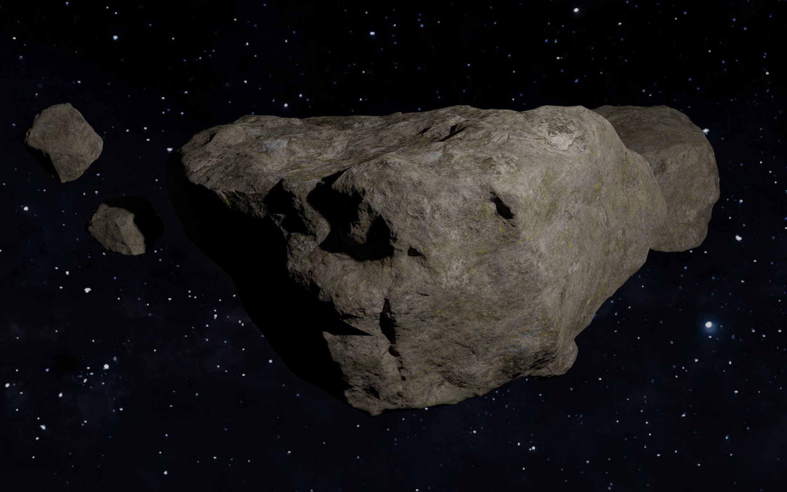
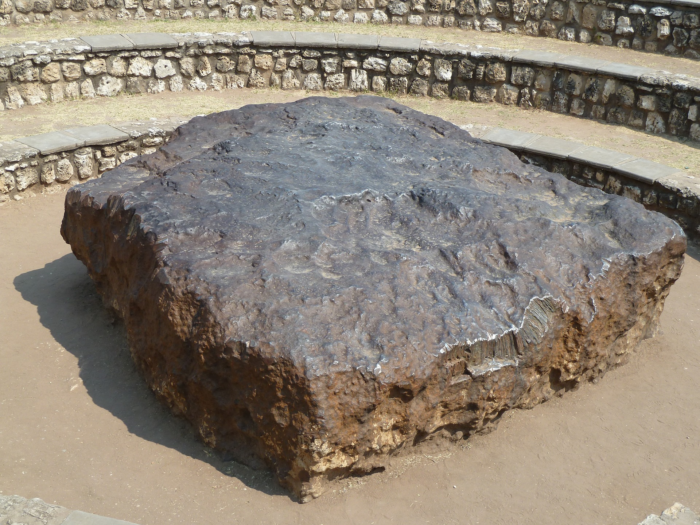

Our Solar System consists of millions of asteroid, meteoroids and comets.
What are they? What is the difference between each ?
Asteroids are smaller than planets , found largely in the asteroid belt (region between Mars and Jupitar). They are small, rocky object that orbits the Sun. They are formed when planets collide and the broken pieces are attracted towards the Sun gravitational field.
Meteoroids are the small broken piece formed when asteroid/comets collide.
When a meteoroid passes close to the Earth, attracted by Earth's gravitational field and enter in the atmosphere which vaporizes and called meteor. These streaks of light are often called "shooting stars" but they aren't. When meteors fall in group from particular direction in a specific time, its called Meteror Shower.

When meteoroids don't vaporize in the atmosphere and land on the Earth, they are called Meteorites.
Comets are the celestial bodies that orbits Sun . Its made up of ice and dust which vaporize to form tail of comets.